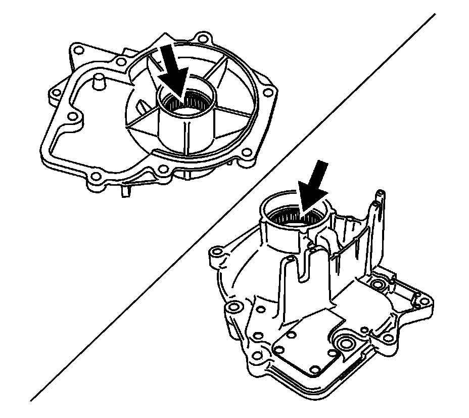
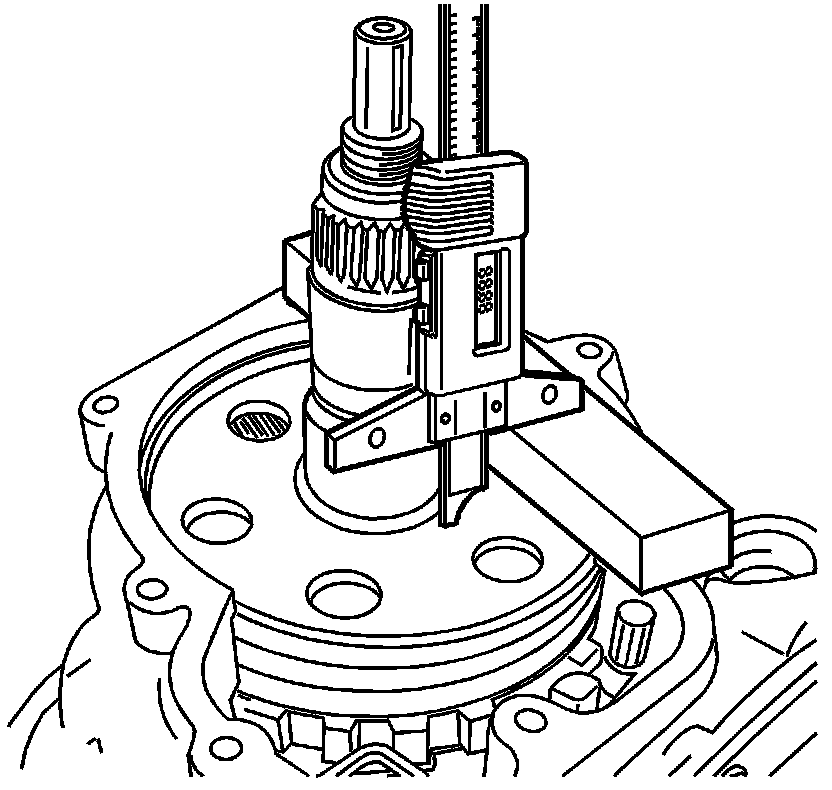
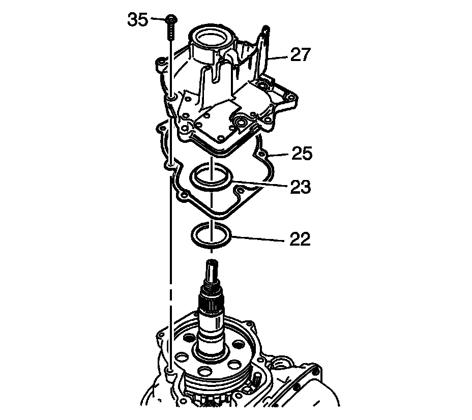

Extension Housing Installation (5L40-E/5L50-E 2WD)
Extension Housing Installation (5L40-E/5L50-E 2WD)
Tools Required
J 44765 Seal Installer

1. Inspect both inner and outer output shaft bearings for the following:
* Damaged cage
* Roller pitted
2. If either bearing is damaged replace extension housing.

3. Rotate the transmission 90 degrees.
4. Measure from the bottom to the face of the ouput shaft. Record this as dimension B. Refer to the End Play Specifications (5L40-E) (End Play Specifications (5L40-E))End Play Specifications (5L50-E) (End Play Specifications (5L50-E)) to determine the correct washer size.

5. Install the input and reaction carrier washer (22).
6. Install the input and reaction carrier thrust bearing (23) onto the extension housing.
7. Install the extension housing gasket (25) onto the extension housing (27).
8. Install the extension housing (27) onto the case.
Notice: Refer to Fastener Notice .
9. Install the extension housing bolts (35).
Tighten the extension housing bolts to 22 N.m (16 lb ft).

Notice: Install the seal onto the tool before installing into the case to prevent damage to the seal.
10. Using J 44765 install the prop shaft flange seal (29).